Industry benchmarks · Volume II of VI · 108 entries · 109–216
Geometry & detail.
Geometry, loaders, LOD and the machinery of a scene. Six volumes, 650 benchmark entries, one catalog. Every card opens a page held in this repository: a rendered three.js example, a local project demo, the three.js source room, or a source dossier.
Volume II
108 entries · Geometry, loaders, LOD and the machinery of a scene.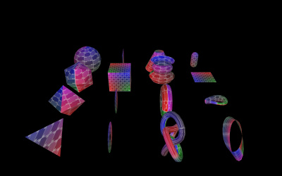
109WebGL Geometries
Official three.js example “WebGL Geometries”. The plate is its rendered screenshot; the card opens the same runnable page from this repository.
mrdoob/three.js · examples/webgl_geometries.html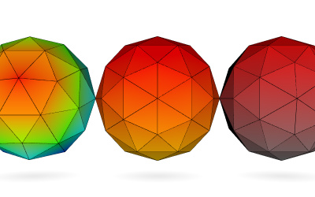
110WebGL Geometry Colors
Official three.js example “WebGL Geometry Colors”. The plate is its rendered screenshot; the card opens the same runnable page from this repository.
mrdoob/three.js · examples/webgl_geometry_colors.html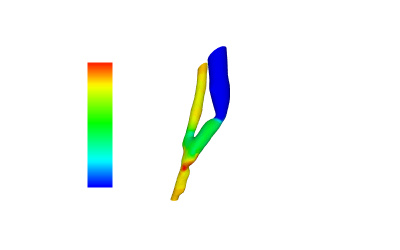
111WebGL Geometry Colors Lookuptable
Official three.js example “WebGL Geometry Colors Lookuptable”. The plate is its rendered screenshot; the card opens the same runnable page from this repository.
mrdoob/three.js · examples/webgl_geometry_colors_lookuptable.html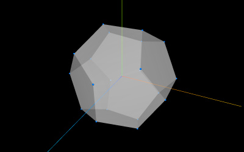
112WebGL Geometry Convex
Official three.js example “WebGL Geometry Convex”. The plate is its rendered screenshot; the card opens the same runnable page from this repository.
mrdoob/three.js · examples/webgl_geometry_convex.html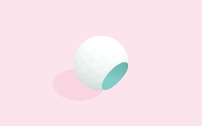
113WebGL Geometry CSG
Official three.js example “WebGL Geometry CSG”. The plate is its rendered screenshot; the card opens the same runnable page from this repository.
mrdoob/three.js · examples/webgl_geometry_csg.html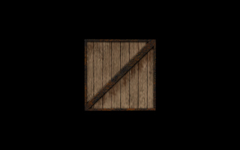
114WebGL Geometry Cube
Official three.js example “WebGL Geometry Cube”. The plate is its rendered screenshot; the card opens the same runnable page from this repository.
mrdoob/three.js · examples/webgl_geometry_cube.htmlWebGL Geometry Extrude Shapes
Official three.js example “WebGL Geometry Extrude Shapes”. The plate is its rendered screenshot; the card opens the same runnable page from this repository.
mrdoob/three.js · examples/webgl_geometry_extrude_shapes.html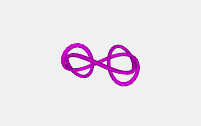
116WebGL Geometry Extrude Splines
Official three.js example “WebGL Geometry Extrude Splines”. The plate is its rendered screenshot; the card opens the same runnable page from this repository.
mrdoob/three.js · examples/webgl_geometry_extrude_splines.html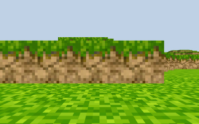
117WebGL Geometry Minecraft
Official three.js example “WebGL Geometry Minecraft”. The plate is its rendered screenshot; the card opens the same runnable page from this repository.
mrdoob/three.js · examples/webgl_geometry_minecraft.html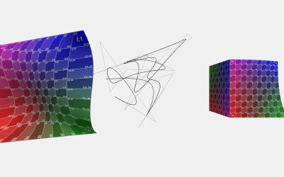
118WebGL Geometry NURBS
Official three.js example “WebGL Geometry NURBS”. The plate is its rendered screenshot; the card opens the same runnable page from this repository.
mrdoob/three.js · examples/webgl_geometry_nurbs.html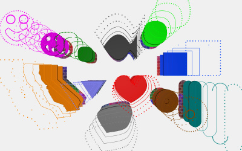
119WebGL Geometry Shapes
Official three.js example “WebGL Geometry Shapes”. The plate is its rendered screenshot; the card opens the same runnable page from this repository.
mrdoob/three.js · examples/webgl_geometry_shapes.html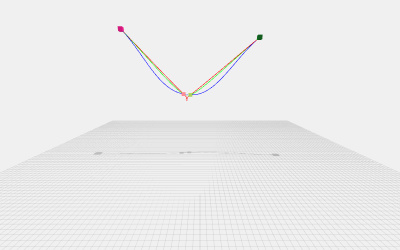
120WebGL Geometry Spline Editor
Official three.js example “WebGL Geometry Spline Editor”. The plate is its rendered screenshot; the card opens the same runnable page from this repository.
mrdoob/three.js · examples/webgl_geometry_spline_editor.html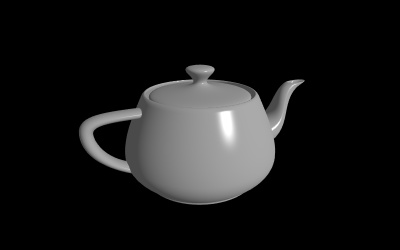
121WebGL Geometry Teapot
Official three.js example “WebGL Geometry Teapot”. The plate is its rendered screenshot; the card opens the same runnable page from this repository.
mrdoob/three.js · examples/webgl_geometry_teapot.htmlWebGL Geometry Terrain
Official three.js example “WebGL Geometry Terrain”. The plate is its rendered screenshot; the card opens the same runnable page from this repository.
mrdoob/three.js · examples/webgl_geometry_terrain.html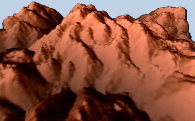
123WebGL Geometry Terrain Raycast
Official three.js example “WebGL Geometry Terrain Raycast”. The plate is its rendered screenshot; the card opens the same runnable page from this repository.
mrdoob/three.js · examples/webgl_geometry_terrain_raycast.html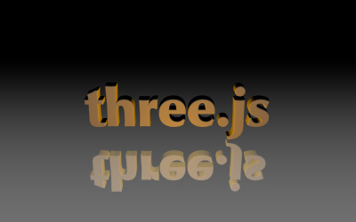
124WebGL Geometry Text
Official three.js example “WebGL Geometry Text”. The plate is its rendered screenshot; the card opens the same runnable page from this repository.
mrdoob/three.js · examples/webgl_geometry_text.html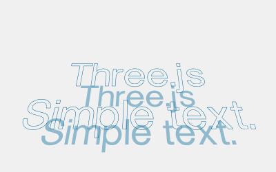
125WebGL Geometry Text Shapes
Official three.js example “WebGL Geometry Text Shapes”. The plate is its rendered screenshot; the card opens the same runnable page from this repository.
mrdoob/three.js · examples/webgl_geometry_text_shapes.htmlWebGL Geometry Text Stroke
Official three.js example “WebGL Geometry Text Stroke”. The plate is its rendered screenshot; the card opens the same runnable page from this repository.
mrdoob/three.js · examples/webgl_geometry_text_stroke.html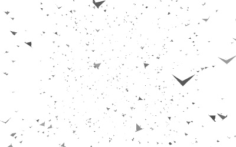
127WebGL GPGPU Birds
Official three.js example “WebGL GPGPU Birds”. The plate is its rendered screenshot; the card opens the same runnable page from this repository.
mrdoob/three.js · examples/webgl_gpgpu_birds.htmlWebGL GPGPU Birds glTF
Official three.js example “WebGL GPGPU Birds glTF”. The plate is its rendered screenshot; the card opens the same runnable page from this repository.
mrdoob/three.js · examples/webgl_gpgpu_birds_gltf.html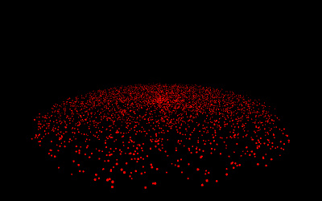
129WebGL GPGPU Protoplanet
Official three.js example “WebGL GPGPU Protoplanet”. The plate is its rendered screenshot; the card opens the same runnable page from this repository.
mrdoob/three.js · examples/webgl_gpgpu_protoplanet.html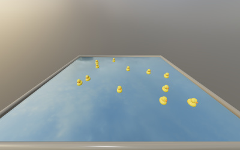
130WebGL GPGPU Water
Official three.js example “WebGL GPGPU Water”. The plate is its rendered screenshot; the card opens the same runnable page from this repository.
mrdoob/three.js · examples/webgl_gpgpu_water.html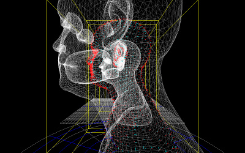
131WebGL Helpers
Official three.js example “WebGL Helpers”. The plate is its rendered screenshot; the card opens the same runnable page from this repository.
mrdoob/three.js · examples/webgl_helpers.html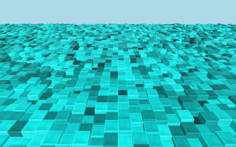
132WebGL Instancing Dynamic
Official three.js example “WebGL Instancing Dynamic”. The plate is its rendered screenshot; the card opens the same runnable page from this repository.
mrdoob/three.js · examples/webgl_instancing_dynamic.html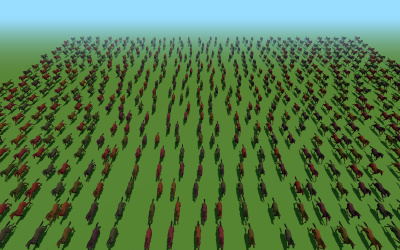
133WebGL Instancing Morph
Official three.js example “WebGL Instancing Morph”. The plate is its rendered screenshot; the card opens the same runnable page from this repository.
mrdoob/three.js · examples/webgl_instancing_morph.html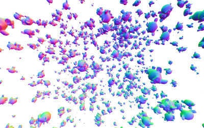
134WebGL Instancing Performance
Official three.js example “WebGL Instancing Performance”. The plate is its rendered screenshot; the card opens the same runnable page from this repository.
mrdoob/three.js · examples/webgl_instancing_performance.html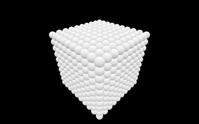
135WebGL Instancing Raycast
Official three.js example “WebGL Instancing Raycast”. The plate is its rendered screenshot; the card opens the same runnable page from this repository.
mrdoob/three.js · examples/webgl_instancing_raycast.html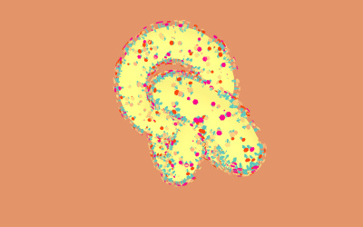
136WebGL Instancing Scatter
Official three.js example “WebGL Instancing Scatter”. The plate is its rendered screenshot; the card opens the same runnable page from this repository.
mrdoob/three.js · examples/webgl_instancing_scatter.html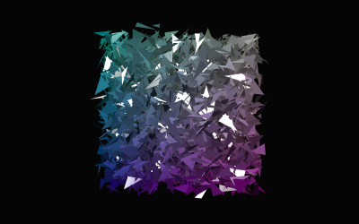
137WebGL Interactive Buffergeometry
Official three.js example “WebGL Interactive Buffergeometry”. The plate is its rendered screenshot; the card opens the same runnable page from this repository.
mrdoob/three.js · examples/webgl_interactive_buffergeometry.html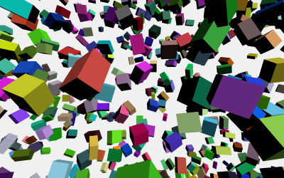
138WebGL Interactive Cubes
Official three.js example “WebGL Interactive Cubes”. The plate is its rendered screenshot; the card opens the same runnable page from this repository.
mrdoob/three.js · examples/webgl_interactive_cubes.html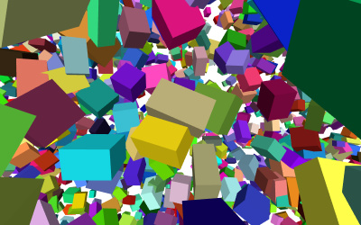
139WebGL Interactive Cubes GPU
Official three.js example “WebGL Interactive Cubes GPU”. The plate is its rendered screenshot; the card opens the same runnable page from this repository.
mrdoob/three.js · examples/webgl_interactive_cubes_gpu.html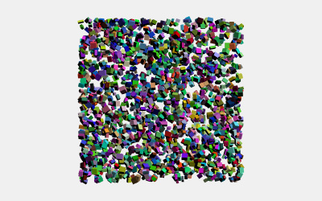
140WebGL Interactive Cubes Ortho
Official three.js example “WebGL Interactive Cubes Ortho”. The plate is its rendered screenshot; the card opens the same runnable page from this repository.
mrdoob/three.js · examples/webgl_interactive_cubes_ortho.html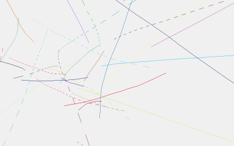
141WebGL Interactive Lines
Official three.js example “WebGL Interactive Lines”. The plate is its rendered screenshot; the card opens the same runnable page from this repository.
mrdoob/three.js · examples/webgl_interactive_lines.html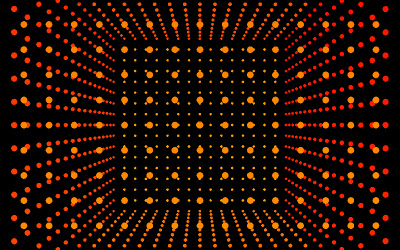
142WebGL Interactive Points
Official three.js example “WebGL Interactive Points”. The plate is its rendered screenshot; the card opens the same runnable page from this repository.
mrdoob/three.js · examples/webgl_interactive_points.html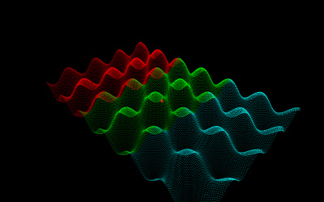
143WebGL Interactive Raycasting Points
Official three.js example “WebGL Interactive Raycasting Points”. The plate is its rendered screenshot; the card opens the same runnable page from this repository.
mrdoob/three.js · examples/webgl_interactive_raycasting_points.html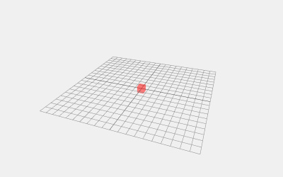
144WebGL Interactive Voxelpainter
Official three.js example “WebGL Interactive Voxelpainter”. The plate is its rendered screenshot; the card opens the same runnable page from this repository.
mrdoob/three.js · examples/webgl_interactive_voxelpainter.htmlWebGL Lensflares
Official three.js example “WebGL Lensflares”. The plate is its rendered screenshot; the card opens the same runnable page from this repository.
mrdoob/three.js · examples/webgl_lensflares.html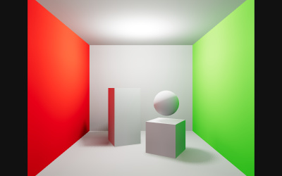
146WebGL Lightprobes
Official three.js example “WebGL Lightprobes”. The plate is its rendered screenshot; the card opens the same runnable page from this repository.
mrdoob/three.js · examples/webgl_lightprobes.html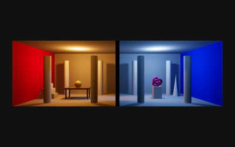
147WebGL Lightprobes Complex
Official three.js example “WebGL Lightprobes Complex”. The plate is its rendered screenshot; the card opens the same runnable page from this repository.
mrdoob/three.js · examples/webgl_lightprobes_complex.htmlWebGL Lightprobes Sponza
Official three.js example “WebGL Lightprobes Sponza”. The plate is its rendered screenshot; the card opens the same runnable page from this repository.
mrdoob/three.js · examples/webgl_lightprobes_sponza.html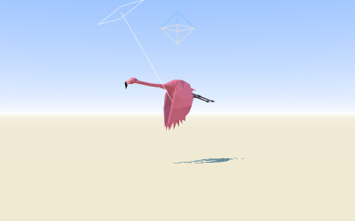
149WebGL Lights Hemisphere
Official three.js example “WebGL Lights Hemisphere”. The plate is its rendered screenshot; the card opens the same runnable page from this repository.
mrdoob/three.js · examples/webgl_lights_hemisphere.html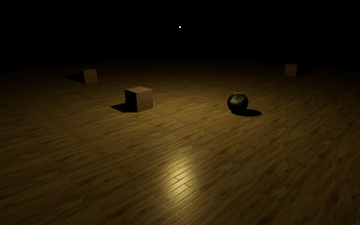
150WebGL Lights Physical
Official three.js example “WebGL Lights Physical”. The plate is its rendered screenshot; the card opens the same runnable page from this repository.
mrdoob/three.js · examples/webgl_lights_physical.html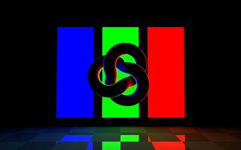
151WebGL Lights Rectarealight
Official three.js example “WebGL Lights Rectarealight”. The plate is its rendered screenshot; the card opens the same runnable page from this repository.
mrdoob/three.js · examples/webgl_lights_rectarealight.htmlWebGL Lights Spotlight
Official three.js example “WebGL Lights Spotlight”. The plate is its rendered screenshot; the card opens the same runnable page from this repository.
mrdoob/three.js · examples/webgl_lights_spotlight.html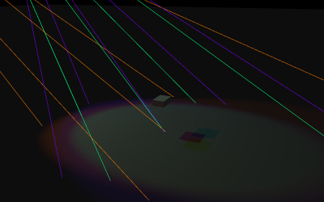
153WebGL Lights Spotlights
Official three.js example “WebGL Lights Spotlights”. The plate is its rendered screenshot; the card opens the same runnable page from this repository.
mrdoob/three.js · examples/webgl_lights_spotlights.html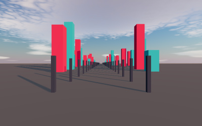
154WebGL Lights Sunlight
Official three.js example “WebGL Lights Sunlight”. The plate is its rendered screenshot; the card opens the same runnable page from this repository.
mrdoob/three.js · examples/webgl_lights_sunlight.html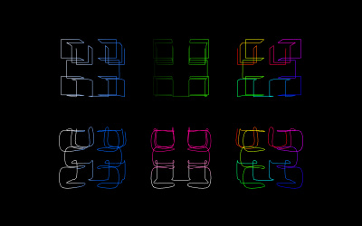
155WebGL Lines Colors
Official three.js example “WebGL Lines Colors”. The plate is its rendered screenshot; the card opens the same runnable page from this repository.
mrdoob/three.js · examples/webgl_lines_colors.html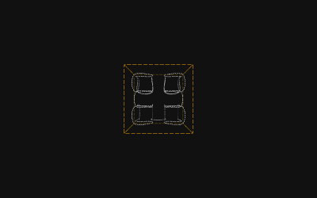
156WebGL Lines Dashed
Official three.js example “WebGL Lines Dashed”. The plate is its rendered screenshot; the card opens the same runnable page from this repository.
mrdoob/three.js · examples/webgl_lines_dashed.html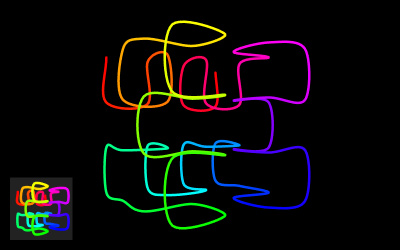
157WebGL Lines Fat
Official three.js example “WebGL Lines Fat”. The plate is its rendered screenshot; the card opens the same runnable page from this repository.
mrdoob/three.js · examples/webgl_lines_fat.html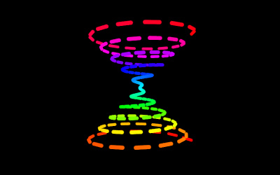
158WebGL Lines Fat Raycasting
Official three.js example “WebGL Lines Fat Raycasting”. The plate is its rendered screenshot; the card opens the same runnable page from this repository.
mrdoob/three.js · examples/webgl_lines_fat_raycasting.html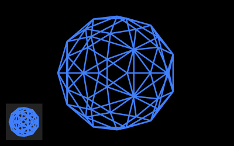
159WebGL Lines Fat Wireframe
Official three.js example “WebGL Lines Fat Wireframe”. The plate is its rendered screenshot; the card opens the same runnable page from this repository.
mrdoob/three.js · examples/webgl_lines_fat_wireframe.html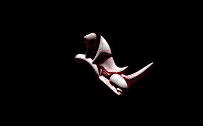
160WebGL Loader 3dm
Official three.js example “WebGL Loader 3dm”. The plate is its rendered screenshot; the card opens the same runnable page from this repository.
mrdoob/three.js · examples/webgl_loader_3dm.html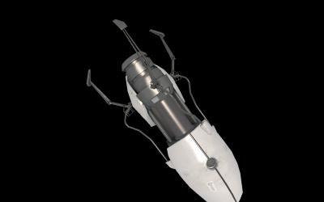
161WebGL Loader 3ds
Official three.js example “WebGL Loader 3ds”. The plate is its rendered screenshot; the card opens the same runnable page from this repository.
mrdoob/three.js · examples/webgl_loader_3ds.htmlWebGL Loader 3dtiles
Official three.js example “WebGL Loader 3dtiles”. The plate is its rendered screenshot; the card opens the same runnable page from this repository.
mrdoob/three.js · examples/webgl_loader_3dtiles.html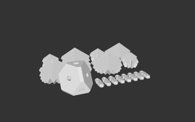
163WebGL Loader 3mf
Official three.js example “WebGL Loader 3mf”. The plate is its rendered screenshot; the card opens the same runnable page from this repository.
mrdoob/three.js · examples/webgl_loader_3mf.html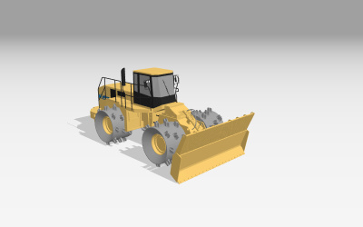
164WebGL Loader 3mf Materials
Official three.js example “WebGL Loader 3mf Materials”. The plate is its rendered screenshot; the card opens the same runnable page from this repository.
mrdoob/three.js · examples/webgl_loader_3mf_materials.html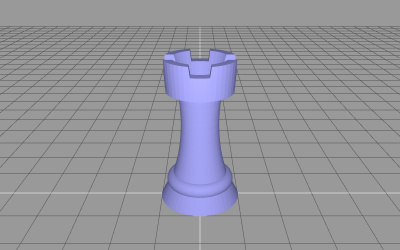
165WebGL Loader Amf
Official three.js example “WebGL Loader Amf”. The plate is its rendered screenshot; the card opens the same runnable page from this repository.
mrdoob/three.js · examples/webgl_loader_amf.html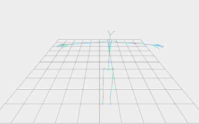
166WebGL Loader BVH
Official three.js example “WebGL Loader BVH”. The plate is its rendered screenshot; the card opens the same runnable page from this repository.
mrdoob/three.js · examples/webgl_loader_bvh.htmlWebGL Loader Collada
Official three.js example “WebGL Loader Collada”. The plate is its rendered screenshot; the card opens the same runnable page from this repository.
mrdoob/three.js · examples/webgl_loader_collada.htmlWebGL Loader Collada Kinematics
Official three.js example “WebGL Loader Collada Kinematics”. The plate is its rendered screenshot; the card opens the same runnable page from this repository.
mrdoob/three.js · examples/webgl_loader_collada_kinematics.htmlWebGL Loader Collada Skinning
Official three.js example “WebGL Loader Collada Skinning”. The plate is its rendered screenshot; the card opens the same runnable page from this repository.
mrdoob/three.js · examples/webgl_loader_collada_skinning.htmlWebGL Loader Draco
Official three.js example “WebGL Loader Draco”. The plate is its rendered screenshot; the card opens the same runnable page from this repository.
mrdoob/three.js · examples/webgl_loader_draco.htmlWebGL Loader Fbx
Official three.js example “WebGL Loader Fbx”. The plate is its rendered screenshot; the card opens the same runnable page from this repository.
mrdoob/three.js · examples/webgl_loader_fbx.htmlWebGL Loader Fbx NURBS
Official three.js example “WebGL Loader Fbx NURBS”. The plate is its rendered screenshot; the card opens the same runnable page from this repository.
mrdoob/three.js · examples/webgl_loader_fbx_nurbs.htmlWebGL Loader Gcode
Official three.js example “WebGL Loader Gcode”. The plate is its rendered screenshot; the card opens the same runnable page from this repository.
mrdoob/three.js · examples/webgl_loader_gcode.htmlWebGL Loader glTF
Official three.js example “WebGL Loader glTF”. The plate is its rendered screenshot; the card opens the same runnable page from this repository.
mrdoob/three.js · examples/webgl_loader_gltf.htmlWebGL Loader glTF Animation Pointer
Official three.js example “WebGL Loader glTF Animation Pointer”. The plate is its rendered screenshot; the card opens the same runnable page from this repository.
mrdoob/three.js · examples/webgl_loader_gltf_animation_pointer.htmlWebGL Loader glTF Anisotropy
Official three.js example “WebGL Loader glTF Anisotropy”. The plate is its rendered screenshot; the card opens the same runnable page from this repository.
mrdoob/three.js · examples/webgl_loader_gltf_anisotropy.htmlWebGL Loader glTF Avif
Official three.js example “WebGL Loader glTF Avif”. The plate is its rendered screenshot; the card opens the same runnable page from this repository.
mrdoob/three.js · examples/webgl_loader_gltf_avif.htmlWebGL Loader glTF Compressed
Official three.js example “WebGL Loader glTF Compressed”. The plate is its rendered screenshot; the card opens the same runnable page from this repository.
mrdoob/three.js · examples/webgl_loader_gltf_compressed.htmlWebGL Loader glTF Dispersion
Official three.js example “WebGL Loader glTF Dispersion”. The plate is its rendered screenshot; the card opens the same runnable page from this repository.
mrdoob/three.js · examples/webgl_loader_gltf_dispersion.htmlWebGL Loader glTF Instancing
Official three.js example “WebGL Loader glTF Instancing”. The plate is its rendered screenshot; the card opens the same runnable page from this repository.
mrdoob/three.js · examples/webgl_loader_gltf_instancing.htmlWebGL Loader glTF Iridescence
Official three.js example “WebGL Loader glTF Iridescence”. The plate is its rendered screenshot; the card opens the same runnable page from this repository.
mrdoob/three.js · examples/webgl_loader_gltf_iridescence.htmlWebGL Loader glTF Progressive LOD
Official three.js example “WebGL Loader glTF Progressive LOD”. The plate is its rendered screenshot; the card opens the same runnable page from this repository.
mrdoob/three.js · examples/webgl_loader_gltf_progressive_lod.htmlWebGL Loader glTF Sheen
Official three.js example “WebGL Loader glTF Sheen”. The plate is its rendered screenshot; the card opens the same runnable page from this repository.
mrdoob/three.js · examples/webgl_loader_gltf_sheen.htmlWebGL Loader glTF Transmission
Official three.js example “WebGL Loader glTF Transmission”. The plate is its rendered screenshot; the card opens the same runnable page from this repository.
mrdoob/three.js · examples/webgl_loader_gltf_transmission.htmlWebGL Loader glTF Variants
Official three.js example “WebGL Loader glTF Variants”. The plate is its rendered screenshot; the card opens the same runnable page from this repository.
mrdoob/three.js · examples/webgl_loader_gltf_variants.htmlWebGL Loader Ifc
Official three.js example “WebGL Loader Ifc”. The plate is its rendered screenshot; the card opens the same runnable page from this repository.
mrdoob/three.js · examples/webgl_loader_ifc.htmlWebGL Loader Imagebitmap
Official three.js example “WebGL Loader Imagebitmap”. The plate is its rendered screenshot; the card opens the same runnable page from this repository.
mrdoob/three.js · examples/webgl_loader_imagebitmap.htmlWebGL Loader Kmz
Official three.js example “WebGL Loader Kmz”. The plate is its rendered screenshot; the card opens the same runnable page from this repository.
mrdoob/three.js · examples/webgl_loader_kmz.htmlWebGL Loader Ldraw
Official three.js example “WebGL Loader Ldraw”. The plate is its rendered screenshot; the card opens the same runnable page from this repository.
mrdoob/three.js · examples/webgl_loader_ldraw.htmlWebGL Loader Md2
Official three.js example “WebGL Loader Md2”. The plate is its rendered screenshot; the card opens the same runnable page from this repository.
mrdoob/three.js · examples/webgl_loader_md2.htmlWebGL Loader Md2 Control
Official three.js example “WebGL Loader Md2 Control”. The plate is its rendered screenshot; the card opens the same runnable page from this repository.
mrdoob/three.js · examples/webgl_loader_md2_control.htmlWebGL Loader Mdd
Official three.js example “WebGL Loader Mdd”. The plate is its rendered screenshot; the card opens the same runnable page from this repository.
mrdoob/three.js · examples/webgl_loader_mdd.htmlWebGL Loader Nrrd
Official three.js example “WebGL Loader Nrrd”. The plate is its rendered screenshot; the card opens the same runnable page from this repository.
mrdoob/three.js · examples/webgl_loader_nrrd.htmlWebGL Loader Obj
Official three.js example “WebGL Loader Obj”. The plate is its rendered screenshot; the card opens the same runnable page from this repository.
mrdoob/three.js · examples/webgl_loader_obj.htmlWebGL Loader Pcd
Official three.js example “WebGL Loader Pcd”. The plate is its rendered screenshot; the card opens the same runnable page from this repository.
mrdoob/three.js · examples/webgl_loader_pcd.htmlWebGL Loader Pdb
Official three.js example “WebGL Loader Pdb”. The plate is its rendered screenshot; the card opens the same runnable page from this repository.
mrdoob/three.js · examples/webgl_loader_pdb.htmlWebGL Loader Ply
Official three.js example “WebGL Loader Ply”. The plate is its rendered screenshot; the card opens the same runnable page from this repository.
mrdoob/three.js · examples/webgl_loader_ply.htmlWebGL Loader Priority
Official three.js example “WebGL Loader Priority”. The plate is its rendered screenshot; the card opens the same runnable page from this repository.
mrdoob/three.js · examples/webgl_loader_priority.htmlWebGL Loader Stl
Official three.js example “WebGL Loader Stl”. The plate is its rendered screenshot; the card opens the same runnable page from this repository.
mrdoob/three.js · examples/webgl_loader_stl.htmlWebGL Loader SVG
Official three.js example “WebGL Loader SVG”. The plate is its rendered screenshot; the card opens the same runnable page from this repository.
mrdoob/three.js · examples/webgl_loader_svg.htmlWebGL Loader Texture Dds
Official three.js example “WebGL Loader Texture Dds”. The plate is its rendered screenshot; the card opens the same runnable page from this repository.
mrdoob/three.js · examples/webgl_loader_texture_dds.htmlWebGL Loader Texture Exr
Official three.js example “WebGL Loader Texture Exr”. The plate is its rendered screenshot; the card opens the same runnable page from this repository.
mrdoob/three.js · examples/webgl_loader_texture_exr.htmlWebGL Loader Texture Hdr
Official three.js example “WebGL Loader Texture Hdr”. The plate is its rendered screenshot; the card opens the same runnable page from this repository.
mrdoob/three.js · examples/webgl_loader_texture_hdr.htmlWebGL Loader Texture Ktx
Official three.js example “WebGL Loader Texture Ktx”. The plate is its rendered screenshot; the card opens the same runnable page from this repository.
mrdoob/three.js · examples/webgl_loader_texture_ktx.htmlWebGL Loader Texture Ktx2
Official three.js example “WebGL Loader Texture Ktx2”. The plate is its rendered screenshot; the card opens the same runnable page from this repository.
mrdoob/three.js · examples/webgl_loader_texture_ktx2.htmlWebGL Loader Texture Lottie
Official three.js example “WebGL Loader Texture Lottie”. The plate is its rendered screenshot; the card opens the same runnable page from this repository.
mrdoob/three.js · examples/webgl_loader_texture_lottie.html 207
207
WebGL Loader Texture Pvrtc
Official three.js example “WebGL Loader Texture Pvrtc”. The plate is its rendered screenshot; the card opens the same runnable page from this repository.
mrdoob/three.js · examples/webgl_loader_texture_pvrtc.htmlWebGL Loader Texture Tga
Official three.js example “WebGL Loader Texture Tga”. The plate is its rendered screenshot; the card opens the same runnable page from this repository.
mrdoob/three.js · examples/webgl_loader_texture_tga.htmlWebGL Loader Texture Tiff
Official three.js example “WebGL Loader Texture Tiff”. The plate is its rendered screenshot; the card opens the same runnable page from this repository.
mrdoob/three.js · examples/webgl_loader_texture_tiff.htmlWebGL Loader Texture Ultrahdr
Official three.js example “WebGL Loader Texture Ultrahdr”. The plate is its rendered screenshot; the card opens the same runnable page from this repository.
mrdoob/three.js · examples/webgl_loader_texture_ultrahdr.htmlWebGL Loader Ttf
Official three.js example “WebGL Loader Ttf”. The plate is its rendered screenshot; the card opens the same runnable page from this repository.
mrdoob/three.js · examples/webgl_loader_ttf.htmlWebGL Loader Usdz
Official three.js example “WebGL Loader Usdz”. The plate is its rendered screenshot; the card opens the same runnable page from this repository.
mrdoob/three.js · examples/webgl_loader_usdz.htmlWebGL Loader Vox
Official three.js example “WebGL Loader Vox”. The plate is its rendered screenshot; the card opens the same runnable page from this repository.
mrdoob/three.js · examples/webgl_loader_vox.htmlWebGL Loader Vrml
Official three.js example “WebGL Loader Vrml”. The plate is its rendered screenshot; the card opens the same runnable page from this repository.
mrdoob/three.js · examples/webgl_loader_vrml.htmlWebGL Loader Xyz
Official three.js example “WebGL Loader Xyz”. The plate is its rendered screenshot; the card opens the same runnable page from this repository.
mrdoob/three.js · examples/webgl_loader_xyz.htmlWebGL LOD
Official three.js example “WebGL LOD”. The plate is its rendered screenshot; the card opens the same runnable page from this repository.
mrdoob/three.js · examples/webgl_lod.htmlNothing in this volume matches that. Try a shorter word.